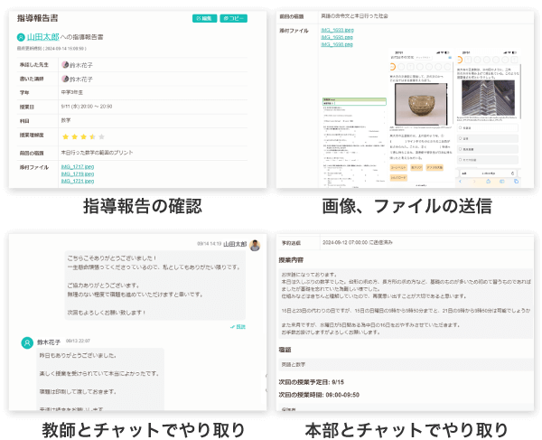
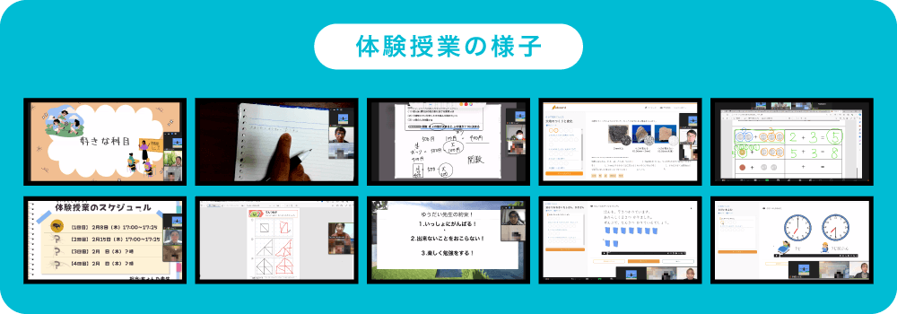
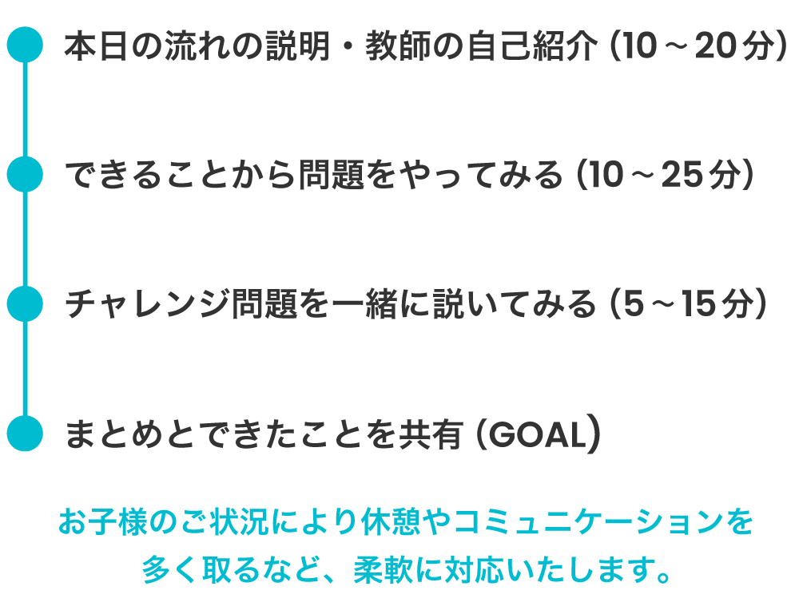

ソウガク
発達特性を学んだ社会人講師が25分から教える！ 担当予定の先生と無料体験2回
特徴
- 先生は全員専門機関の研修を受けた社会人講師
- 専門家が開発したアセスメントシートで、一人ずつ指導計画をつくる
- 授業は小学生25分から（中高生は35分から）
- 無料体験は2回。入会後に担当する予定の先生が担当
- 授業のたびにアプリで指導報告。先生・本部にチャットで相談
- 違約金・途中解約料0円。契約期間の縛りなし
- 対象：小学生〜高校生
| 料金の目安 | 対応学年 |
|---|---|
| 月13,200円〜小学生25分×月4回・税込。別途入会金22,000円（キャンペーンで無料の場合あり） | 小学生〜高校生全国・オンライン（Zoom） |
| 1回の授業 | 先生 |
| 小学生25分・50分・75分 中高生35分・60分・75分 | 全員が専門機関の研修を受けた社会人講師 |
| 保護者サポート | 無料体験 |
| 毎回の指導報告・先生/本部とチャット・定期的な保護者面談・保護者向け勉強会 | 2回。担当予定の先生が担当（1回目は保護者面談にもできる） |
※各社公式サイトの記載（2026年10月16日確認）。
診断なし・グレーゾーンでも相談OK
無料体験を公式で見る当サイトのランキング：第1位（総合評価 4.9／5）ランキングで見る
ソウガクの強み
ソウガクの強み
強み1発達特性を学んだ社会人講師が教える
ソウガクの先生は全員が社会人で、発達支援の専門機関「一般社団法人 発達凸凹アソシエーション」による教師研修と、座学のマニュアル研修を受けています。発達凸凹アソシエーションは2014年から発達障害・グレーゾーンの保護者向け研修を行っている団体で、講師研修のほか、教材のアドバイスやスタッフ研修にも関わっています。放課後等デイサービスや児童発達支援事業所での勤務経験、臨床心理士・作業療法士・学校教員などの資格を持つ先生も在籍しています。
宿題を始めるまでに時間がかかる、説明の途中で気がそれる。そんなときの声のかけ方を学んだ先生が担当します。

強み2小学生は25分から。短い授業で始められる
コースは小学生が25分か50分、中高生が35分か60分です。集中が続きにくい子や低学年向けに、短いコースが用意されています。勉強だけでなく、会話や脳トレのようなゲームを取り入れることもあります。
強み3担当予定の先生と、無料体験を2回受けられる
無料体験は2回で、体験を担当するのは入会後に担当する予定の先生です。1回目は保護者面談にすることもできます。体験のあとは、先生と教務が作った指導計画を受け取れます。

強み4専門家が作ったアセスメントシートで、指導計画をつくる
専門家が開発したアセスメントシートで、記憶力・集中力などのつまずきの原因を特性面と環境面から見て、一人ずつ指導計画をつくります。たとえば「1回の指示を1つにする」「授業の最初に流れを説明して見通しを持たせる」といった支援です。体験のあとに、その子だけの指導計画を受け取れます。
強み5授業のたびに報告が届き、チャットで相談できる
授業が終わるたびに、先生が専用アプリで指導報告を送ります。気になることは、教師や本部にチャットで相談できます。保護者向けの勉強会や相談窓口もあります。
強み6違約金・途中解約料は0円。学年が上がっても料金は同じ
年会費・保証金・更新費・教師交代費・違約金・途中解約料はすべて0円で、契約期間の縛りもありません。月単位で休会・退会ができ、再開するときは入会金がかかりません。学年が上がっても、受験生になっても、科目を増やしても料金は変わらず、教材を買う必要もありません（映像授業2,000本・ドリル10,000問の学習ツールも追加費用なし）。
※出典：ソウガク公式サイトほか（2026年10月16日確認）。
診断なし・グレーゾーンでも相談OK
無料体験を公式で見るソウガクが向いている家庭
こんな家庭に向いています
- 長い授業だと集中が続かないかもしれない
- 学生ではなく、社会人の先生に見てほしい
- 発達特性について学んだ先生に教えてほしい
- 入会前に、実際に担当する先生と話してみたい
- 診断はないが、グレーゾーンかもしれない
申し込む前に確認したいこと
- 授業の振替は同じ月の中で、前日までの連絡が必要
- 入会金22,000円（税込）が別にかかる（キャンペーンで無料になる場合あり）
- 授業はオンラインのみ（パソコン・タブレット・スマホのいずれか）
- 返金保証には条件がある（下のよくある質問）
診断なし・グレーゾーンでも相談OK
無料体験を公式で見るソウガクの料金
| 学年 | 短いコース | 長いコース |
|---|---|---|
| 小学生 | 25分 13,200円 | 50分 22,000円 |
| 中学生 | 35分 18,480円 | 60分 26,400円 |
| 高校生 | 35分 21,560円 | 60分 29,920円 |
※すべて月4回・税込。入会金22,000円（税込）は別途。保証金・月会費・更新費・教師交代費は0円。科目数による料金アップ、受験生の割増なし。きょうだいの2人目以降は入会金免除、ひとり親家庭は入会金半額。 出典：公式サイト（2026年10月16日確認）
診断なし・グレーゾーンでも相談OK
無料体験を公式で見る無料体験・申し込みの流れ
申し込みの流れ
- ステップ1申し込む
- ステップ2事前のヒアリング
- ステップ3無料体験を2回受ける
- ステップ4入会を決める
ステップ1申し込む
公式サイトのフォーム、公式LINE、電話（0120-907-377）から申し込みます。
ステップ2事前のヒアリング
教務担当が、学習状況や希望の先生、日時を聞きます。
ステップ3無料体験を2回受ける
ヒアリングをもとに選ばれた先生が担当。体験後に個別の指導計画とフィードバックを受け取ります。

ステップ4入会を決める
相性が合えば、体験の先生がそのまま担当します。合わなければ入会しなくて大丈夫です。
無料体験の申込フォームの入力項目
- お子さんのお名前（必須）
- お子さんのお名前のフリガナ（必須）
- お子さんの学年（必須）
- 電話番号（必須）
- メールアドレス（必須）
- 体験希望コース：無料体験授業／無料説明会（必須）
- 質問・相談・要望（任意）
※公式の申込フォームの表示は「簡単3分」。出典：公式サイトの申込フォーム（2026年10月16日確認）。広告のリンク先のページでは項目が異なる場合があります。
※流れの出典：ソウガク公式サイト（2026年10月16日確認）。
診断なし・グレーゾーンでも相談OK
無料体験を公式で見るソウガクの口コミ・評判
ソウガクの口コミ
- 中学2年生・特別支援学級の保護者
勉強に苦手意識があり、初回の体験では画面の前に座っているのも難しかった。先生が急がずに時間をかけて関係をつくり、今は授業の時間を楽しみにしている。
- 小学4年生・ADHDの診断ありの保護者
学校へ行ける日が減り、家で勉強を見ると親子で言い合いになっていた。週1回オンラインで学ぶ習慣ができ、「ずっと自分が見なければ」という負担が軽くなった。
- 中学2年生の保護者（岡山県）
子どものタイプに合わせた学び方を相談できる先生に初めて出会えた。他社と違って、体験を何回か受けられたのも助かった。
※ソウガク公式サイト掲載の声を当サイトで要約。個人の感想です。アイコンはイメージです。
診断なし・グレーゾーンでも相談OK
無料体験を公式で見るよくある質問
よくある質問
質問1診断がついていなくても受けられますか？
はい。診断がなくても、グレーゾーンでも受講できます。診断名の申告や手帳・受給者証の提出も不要です。
質問2集中力が続かなくても大丈夫？
集中が続きにくい子向けに、小学生は25分、中高生は35分の短いコースがあります。
質問3先生が合わなかったら？
教師の交代は何度でも無料です。担当教師の性別の希望も伝えられます。
質問4体験後にしつこく勧誘されませんか？
公式サイトのよくある質問で、無理な勧誘は一切ないと明記されています。
質問5返金保証はありますか？
授業料1カ月分の全額返金保証があります。入会金は対象外で、初めて利用する家庭（1世帯1回）、初回授業日から30日以内の連絡、最低1回の授業受講などの条件があります。申込前に公式サイトで最新の条件を確認してください。
※出典：ソウガク公式サイト（2026年10月16日確認）。
診断なし・グレーゾーンでも相談OK
無料体験を公式で見る